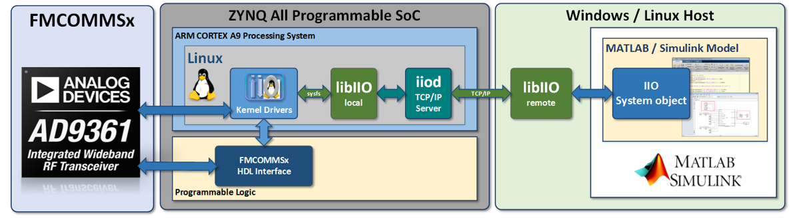

Receiving and Sending Data
Remote data streaming to and from hardware is made available through system object interfaces, which are unique for each component or platform. The hardware interfacing system objects provide a since class to both configure a given platform and move data back and forth from the device.
Command and control of hardware from MATLAB is accomplished by leveraging the IIO drivers built into the target platform's kernel and libiio which provides remote backends to control drivers across different backends. Backends can be Ethernet, serial, or USB based. Below is a diagram of the different components in the stack for an FMComms based systems, but will be nearly identical for all libiio-based systems.

Since libiio is cross-platform it can be used from Windows, Linux, or macOS based systems. It is also a lower level library independent of MATLAB, so when moving toward production or untethered systems similar APIs that are used in MATLAB can be used in C,C++,Python, or other languages.
Connecting and Configuration
Connecting to hardware is done by setting the uri property of the system object interface. The uri for libiio always has the convention "< backend >:< address >", where backend can be ip,usb, or serial. address will be specific to the backend. This is documented in the libiio API.
Below is a basic example of setting up an AD9361 receiver and the Stingray class in an X-band development kit using an Ethernet/IP backend where the address of the target system is 192.168.2.1:
The state of the object follows the flow of the diagram below triggered by lines 10 and 21 above.
For more details on documentation related to using the AD9081 high-speed converter, see this page.